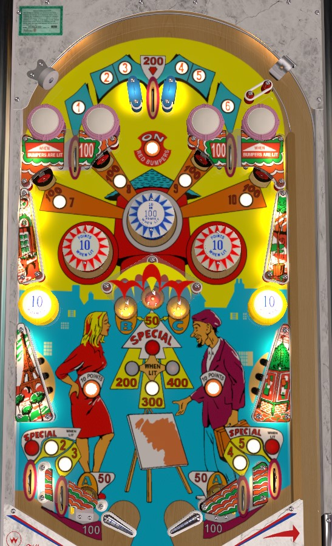

Make A-B-C saucers in order to increase the value of the center saucer to be up to 400 points and a Special. Complete 1-10 to light the out lanes for Special. Complete 7-8-9-10 specifically to light the center pop bumper for 100 points (alternates being lit on switch hits).
1 and 6 are collected from the left and right top lanes; these lanes score 10 points, or are lit alternately for 100 points based on 1-point switch hits. The center top lane scores 200 points and awards the next needed number in the sequence of 2-3-4-5. 7-8-9-10 are collected at 100-point standup targets just below the top lanes. 2-3-4-5 can also be collected at the game's 4 out lanes.
Collecting 7-8-9-10 lights the center blue bumper; this bumper scores 10 points or 100 when lit, and is lit alternately based on 1-point switch hits only when 7-8-9-10 has been completed. Red bumpers score 1 point or 10 when lit, and are lit for the rest of the ball by the upper rollover button. Completing the 1-10 sequence lights the out lanes for Special; the Special can alternate between the two out lanes based on 1-point switch hits, or both out lanes can be lit when 1-10 is completed.
The two saucers near the flippers award A. There are 3 saucers in the center of the table, which are the B, Bonus, and C saucers, from left to right. The A, B, and C saucers always score 50 points. The Bonus saucer value starts at 200 points. If the bonus saucer is at 200 points, making an A saucer increases the bonus to 300 points. If the bonus is at 300 points, making the B saucer increases the bonus to 400 points. If the bonus saucer is at 400 points, making the C saucer lights the bonus saucer for a Special. Making the bonus saucer at any time scores the currently lit value and reset it to 200 points and no Special. Special can only be worth a free game, and cannot award an extra ball or points.
Each side of the table bottom has 2 out lanes, a saucer, and a flipper, working from the edge of the table inward. The four out lanes each award one of the numbers in 2-3-4-5 and score 100 points. The saucers always score 50 points and are both labelled with A. The slingshots positioned about 1/4 of the table along the edges score 1 point.
There is no end of ball bonus or extra ball feature. Tilt ends game. Special scores a free game and cannot be worth points.